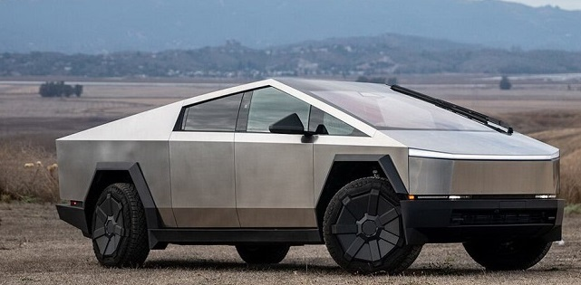

TЕSLA CYBERTRUCK — ЕЛЕКТРОПІКАП З УНІКАЛЬНИМИ ТЕХНОЛОГІЯМИ
Від нуля до натхнення — за кілька секунд


👉 офіційний автодилер
TЕSLA CYBERTRUCK — МАЙБУТНЕ ВЖЕ СЬОГОДНІ
Cybertruck дуже потужний: найсильніша версія має три електродвигуни, розганяється до 100 км/год менше ніж за 3 секунди та може проїхати понад 500 км на одному заряді. У нього є передній багажник, великий вантажний відсік, та навіть розетки, щоб підключити техніку або зарядити інший електромобіль. Всередині Tesla Cybertruck просторо. Там зручно сидіти п’ятьом людям, є великий сенсорний екран, сучасна аудіосистема та автопілот.
ХАРАКТЕРИСТИКИ TESLA CYBERTRACK:
- RWD Long Range (задній привід)
- Dual‑motor AWD (повний привід)
- Акумулятор: 123 кВт·год, зарядка до 350 кВт
- Tri‑motor “Cyberbeast” — флагманська тримоторна версія
- Ексцентричний кутастий кузов із шліфованої нержавіючої сталі, піонерська технологія формування каркасу
- 845 кінських сил, запас ходу понад 500 км та розгін від 0 до 100 км/год менш ніж за 3 секунди
ЗРУЧНОСТІ TESLA CYBERTRACK:
- Салон на 5 місць з простором для ніг та голови навіть для задніх пасажирів
- 15-дюймовий сенсорний дисплей з оновленнями "по повітрю" (OTA)
- Преміальна аудіосистема з потужними динаміками та сабвуфером
- Інтелектуальний автопілот (Autopilot) з можливістю розширення до Full Self-Driving
- Інноваційне кермо‑штурвал (yoke) у деяких версіях
- Багажне відділення в передній частині (фронтальний багажник / “frunk”)
- Потужна електросистема для живлення техніки (220V / 110V розетки в кузові)
- Розетка під зарядку інших авто або електроінструментів
- Великий вантажний кузов (6,5 футів ≈ 2 метри) з накриттям (roll cover)